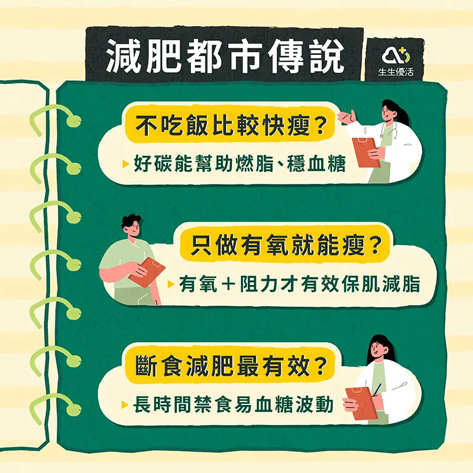

45-65歲慢性病族群健康減重全攻略——不只是瘦，還要健康！
許多45-65歲的「壯世代」朋友，在面對減重這件事時，總是抱著「年輕時隨便動一下就瘦，現在怎麼這麼難？」的困惑。再加上這個年紀往往伴隨高血壓、糖尿病、高血脂、脂肪肝等慢性病，減重不能再像年輕時一樣靠斷食、激烈運動，而是要找到科學且能長久維持的方法，讓身體輕盈、數據漂亮，健康過好每一天！

原因
說明
1. 基礎代謝率下降
肌肉減少 → 燃燒能力減弱
2. 荷爾蒙變化
男女荷爾蒙改變 → 脂肪分布改變
3. 胰島素阻抗
吃太多精緻糖，讓血糖調控出問題
4. 肌少症風險
肌肉減→代謝降→活動力差
二、養肌不餓瘦、吃對不忌口、運動不操勞
原因
關鍵建議
衛教轉化方式
1. 熱量赤字適度
減300–500 kcal/天，不過度節食
視覺比喻：減肥像刨冰，削太快會碎！
2. 蛋白質攝取足
每日1.2–1.5g/kg體重
「蛋白質守護隊」角色包：魚、豆、蛋、乳
3. 好碳不低碳
選擇低GI食物
GI階梯圖或角色：「升糖慢跑者 vs 快速暴衝怪」
4. 好油要吃對
多Omega-3、少反式脂肪
好油 vs 壞油擬人對決圖：橄欖油紳士 vs 油炸流氓
5. 運動四合一
有氧＋阻力＋柔軟＋核心
拆成一週4天類型，角色：肌力戰士、有氧舞者等
6. 睡眠與壓力
可體松過高 → 腹脂肪堆積
睡眠小天使 vs 壓力黑霧魔靈
三、壯世代減重常見迷思

四、結語：不為瘦，而為走得遠、活得好！
對45-65歲的慢性病族群來說，減重的目標不是「變瘦」，而是「變健康」。穩定減重、保留肌肉、改善代謝，才能真正活得長久又精采！
不求快、不求極端，選擇適合自己的飲食與運動方式，才是能維持一輩子的健康習慣！